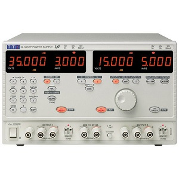

pylab_ml.smu.tti.ql355tp.QL355TP
- class QL355TP(addr=None, interface=None, backend=None, identify=True, instName=None)[source]
Bases:
TTIInterface to the Power supply unit TTi QL355TP.
- Date:
April 27, 2026
- Author:
Semi-ATE <info@Semi-ATE.org>

- The QL355TP can
supply two voltage sources and limit its current
Manual- Examples:
common for QL355TP:
examples/smu/ql355tp.py
- __init__(addr=None, interface=None, backend=None, identify=True, instName=None)[source]
Connect and initialize.
- Parameters:
addr (int) – interface address
interface (Interface) –
To select the bus type, the same bus must also be selected on the instrument. For selection : Control 2, SHIFt 6 and then make the right selection with the rotary wheel.gpib
- usbserial:
- for serial or usbThe serial bus only works with a special cable (rts must be connect to cts)USB works only with windows. Please install the driver ‘instruments/smu/tti/TTI_USB_FTDI-v2_12_16’
backend (str) – visa backend is either ‘@ni’ for NI-Library or ‘@py’ for pure python pyvisa-py backend. On default it uses ‘@ni’ on win32 and ‘@py’ on other platforms.
instName (string) – Instance Name from top.
- Example: Initialization
>>> vdd = QL355TP(11, 'vdd') # GPIB address=11 >>> vdd.init() # connect and initialize instrument with 2 channels
- Example: Config power supply 1+2 and enable the output
>>> vdd[0].voltage = 5.0 # voltage (@channel=0) = 5V >>> vdd[0].current_lim = 0.01 # current limit = 10mA >>> vdd[0].onoff = 1 # enable output 0 >>> vdd[1].voltage = 6.3 # voltage (@channel=1) = 6.3V >>> vdd[1].current_lim = 0.58 # current limit = 580mA >>> vdd[1].onoff = 1 # enable output 0
Methods
__init__([addr, interface, backend, ...])Connect and initialize.
clear()Clear error status.
close([force])Close connection to instrument.
createattributes(dictionary[, parent, ...])Create attributes or methods from a dictionary.
errmsg()Read Execution Error Register.
find_names() returns list of identifiers strings, lhs of = assignments
help()identify([showInstName])Identify message.
init([identify])Connect to TTI instrument and initialize.
local()Switch back to local instrument control.
message([message])Device has no display, message display to logger.info.
mfilter(input)mqtt_add(client, instrument[, liste, qos])Add the instrument to mqtt.
Remove the instrument from mqtt.
publish(topic, value)Publish topic as type='cmd' with paylad=value.
publish_get(function_name, value)Publish function_name as type='get' with paylad=value.
publish_set(function_name, value)Publish function_name as type='set' with paylad=value.
read()Read the instruent directly.
reset()Reset and switch beep off.
Start setup instrument settings, called from class instruments.
write(cmd)Write direct to instrument.
Attributes
Set/get channel number if the instrument have more than one channel.
commandMeasure DC current of actual Channel.
Set the current clamping (A) of actual Channel.
Query IDN.
Return with instname or instname[ch] if it has channels.
interchoicesSet/get the number of measurement to be carried out in a loop.
mqtt_enablemqtt_listGetter for the mqtt_status.
Get/Set over current protection trip point at x Amps.
Get/Set the Output-State of actual Channel.
Get/Set over voltage protection trip point at x Volts.
Get/Set sense.
Get/Set Standard Event Status Enable Register.
Get/Set the operating Output-Value-Range for actual Channel.
Get/Set voltage.
if something wrong with your called methode, than set the result to self.ATTR_ERROR
last set/get attribute name.
last set attribute value.
- ATTR_ERROR
if something wrong with your called methode, than set the result to self.ATTR_ERROR
- class Sense(value)
Bases:
EnumEnum for Sense control.
- local = 0
value for sense mode = local
- remote = 1
value for sense mode = remote
- attrLast
last set/get attribute name.
- attrLastvalue
last set attribute value.
- property channel
Set/get channel number if the instrument have more than one channel.
- you can also use:
>>> vdd[0].voltage = 5 # set voltage from channel 0 >>> vdd[1].current = 0.1 # set current from channel 1 >>> v = vdd[1].voltage # measure voltage from channel 1
- clear()
Clear error status.
- close(force=False)
Close connection to instrument.
- createattributes(dictionary, parent=None, child=None, childname='')
Create attributes or methods from a dictionary.
syntax from the dictionary see example in the class documentation.
- Parameters:
dictionary (dict) – {attribute/methode name : (Device command for read/write) , range, call functions}.
- Returns:
None.
- property current
Measure DC current of actual Channel.
- errmsg()
Read Execution Error Register.
- find_names()
find_names() returns list of identifiers strings, lhs of = assignments
- property i_clamp
Set the current clamping (A) of actual Channel.
- property id
Query IDN.
- identify(showInstName=False)
Identify message.
- init(identify=False)
Connect to TTI instrument and initialize.
- property instName
Return with instname or instname[ch] if it has channels.
- json = <module 'json' from '/home/runner/miniconda3/envs/test/lib/python3.9/json/__init__.py'>
- local()
Switch back to local instrument control.
- property measurecnt
Set/get the number of measurement to be carried out in a loop.
TODO: this function is not running yet, it is only a dummy
if the result == None than this function not implemented. The return value for the measurement is calculated togetheer with the mfilter setting.
- message(message=None)
Device has no display, message display to logger.info.
- mqtt_add(client, instrument, liste='#', qos=0)
Add the instrument to mqtt.
calling from base_instrument, after the instrument (device) has been create. Normally you have not to use this function, only base_instrument use it.
- Returns:
None.
- mqtt_disconnect()
Remove the instrument from mqtt.
calling from base_instrument, if the instrument are closing. Normally you have not to use this function, only base_instrument use it.
- Returns:
None.
- property mqtt_status
Getter for the mqtt_status.
- property ocp
Get/Set over current protection trip point at x Amps.
- property onoff
Get/Set the Output-State of actual Channel.
0 = Output off1 = Output on
- property ovp
Get/Set over voltage protection trip point at x Volts.
- publish(topic, value)
Publish topic as type=’cmd’ with paylad=value.
- publish_get(function_name, value)
Publish function_name as type=’get’ with paylad=value.
- publish_set(function_name, value)
Publish function_name as type=’set’ with paylad=value.
- read()
Read the instruent directly.
- reset()
Reset and switch beep off.
- property sense
Get/Set sense.
‘local’ = Local sensing (2-Wire)‘remote’ = Remote sensing (4-Wire)
- setup_inst()[source]
Start setup instrument settings, called from class instruments.
Create 2 channels
- property state
Get/Set Standard Event Status Enable Register.
see QL355T Instruction Manual for more details
- property v_range
Get/Set the operating Output-Value-Range for actual Channel.
0 = 15V/5A’ : Voltage 0 to 15 V / Current 0 to 5 A1 = 35V/3A’ : Voltage 0 to 35 V / Current 0 to 3 A2 = 35V/500mA : Voltage 0 to 35 V / Current 0 to 500 mA
- property voltage
Get/Set voltage.
- write(cmd)
Write direct to instrument.
- Example: send command reset :
>>> inst.write('*RST')